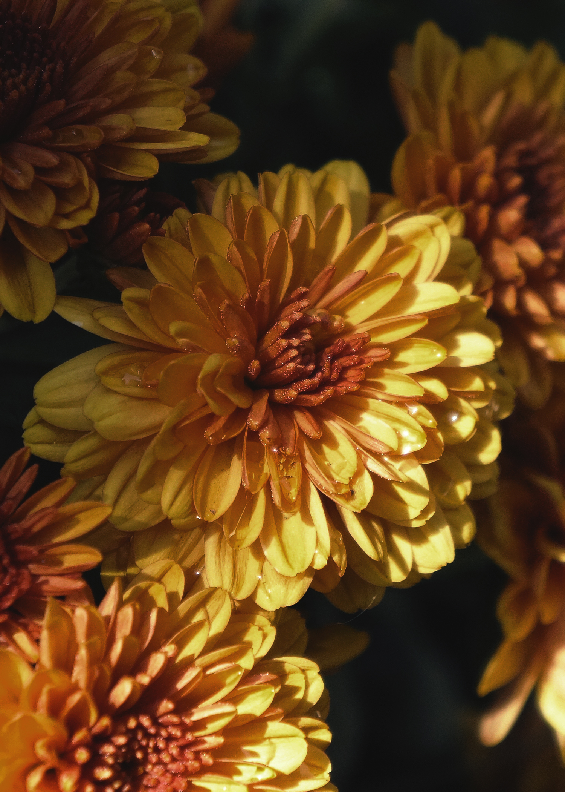

I utilized a lot of sharpening and curves to adjust this photo and make improve it's quality. I wanted to reach for a more cinematic and heighten feel. Photo editing is a skill I love to explore and improve on anytime I'm ding work for class or taking my own personal images.